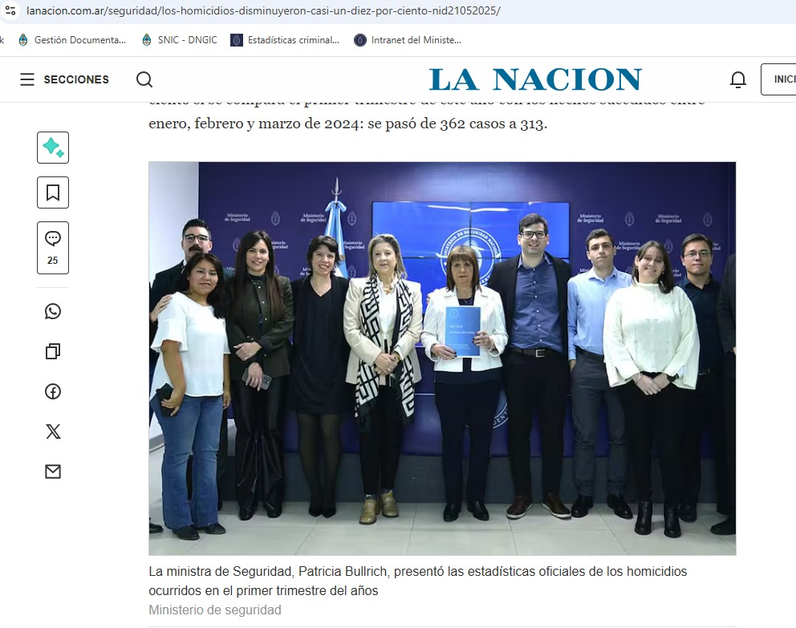
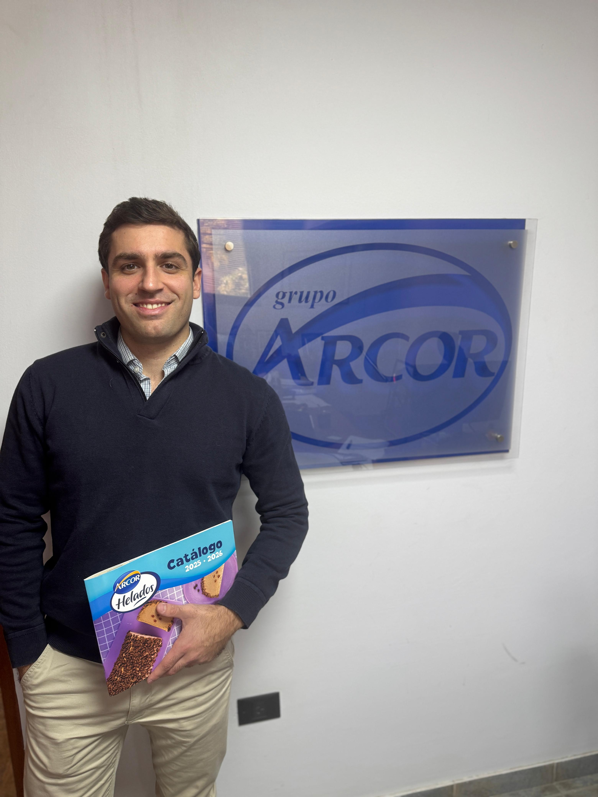

Tablero Climático Kafka
Producto en Colab que integra Open-Meteo, ZooKeeper, Kafka, productores y consumidores Python para enriquecer datos meteorológicos y alimentar un dashboard interactivo sin cambiar su HTML final.
View case studyData Science · Ingeniería de Datos · Simulación
Estudiante de Licenciatura en Ciencias de Datos con foco en proyectos aplicados de simulación, análisis de datos e ingeniería de datos. Me interesa convertir problemas reales en modelos, métricas y herramientas que ayuden a decidir mejor.
Trabajos aplicados con modelos, pipelines, simulacion, transferencia de conocimiento y prototipos listos para usuarios.
Producto en Colab que integra Open-Meteo, ZooKeeper, Kafka, productores y consumidores Python para enriquecer datos meteorológicos y alimentar un dashboard interactivo sin cambiar su HTML final.
View case studySimulación de operaciones portuarias con buques, contenedores y grúas para comparar escenarios de capacidad, tiempos de espera, utilización de recursos y duración total del sistema.
View case studyServicio orientado a datos para asistir decisiones sobre focos de incendio, integrando datos meteorológicos, espaciales, edafológicos y simulación de propagación.
View case studyNotebook privado y sin costo para transcribir audios de clases, exportar texto con timestamps y generar resúmenes con modelos de lenguaje.
View projectPipeline en Airflow para descargar, transformar, unir y monitorear datos ambientales de Buenos Aires, con Docker, tareas paralelas, alertas P95 y correos automáticos.
View case studyPaper publicado en JAIIO/ASAID sobre detección de SLI desde 1063 narrativas espontáneas, con pipeline de reducción de dimensionalidad y clasificación 14-NN.
View case studyExploración de modelos de denoising para imágenes biomédicas, con datasets sintéticos, autoencoders y enfoques inspirados en pix2pix/CLIDiM.
View projectExperiencia aplicada en datos, consultoría, docencia y análisis operativo.

Trabajo de asesoría orientado a convertir información dispersa en insumos claros para análisis, seguimiento y toma de decisiones. Enfoque en lectura de datos, criterios de priorización y comunicación de resultados para perfiles técnicos y no técnicos.

Acompañamiento consultivo para ordenar procesos, datos operativos e indicadores de negocio. La experiencia combinó mirada analítica con entendimiento del funcionamiento real de una organización productiva de escala.
Apoyo académico en una materia clave de formación data: acompañamiento a estudiantes, explicación de conceptos, revisión de trabajos prácticos y conexión entre fundamentos de ingeniería de datos y casos aplicados.
Experiencia inicial en análisis de datos dentro de un entorno manufacturero, trabajando con información operativa para entender producción, procesos y necesidades de control en una pyme.
Resumen inicial para presentar perfil, herramientas y áreas de interés.
Perfil orientado a ciencia de datos aplicada, con experiencia académica y proyectos personales en simulación, análisis exploratorio, dashboards y pipelines.
Python, Pandas, NumPy, SimPy, Streamlit, notebooks, análisis estadístico y visualización de datos.
Modelado de procesos, optimización operativa, ingeniería de datos, calidad de datos y productos analíticos.
Para conectar o ver el código de los proyectos: